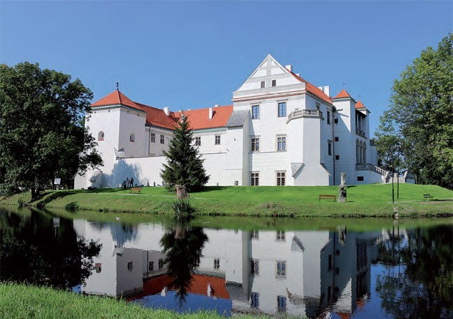
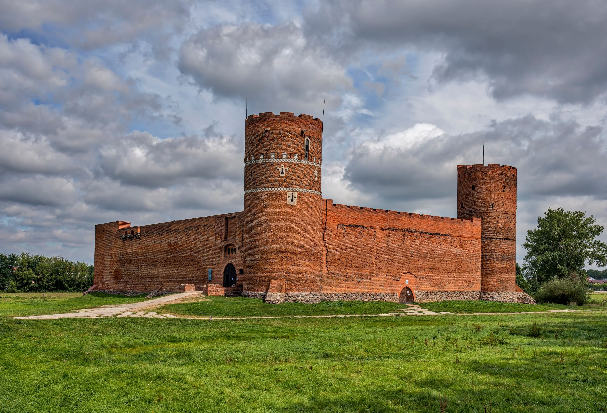

Mazowsze to największy region Polski, położony w jej centralnej części. Słynie z bogatej historii, malowniczych krajobrazów oraz licznych atrakcji turystycznych. Znajduje się tu Warszawa – stolica kraju, zachwycająca zabytkami, muzeami i nowoczesną architekturą. Warto również odwiedzić Kampinoski Park Narodowy, urokliwe nadwiślańskie miejscowości oraz zabytkowe zamki i pałace rozsiane po całym regionie. Mazowsze łączy tradycję z nowoczesnością, oferując ciekawe miejsca dla każdego podróżnika.

